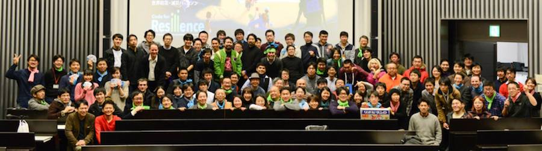
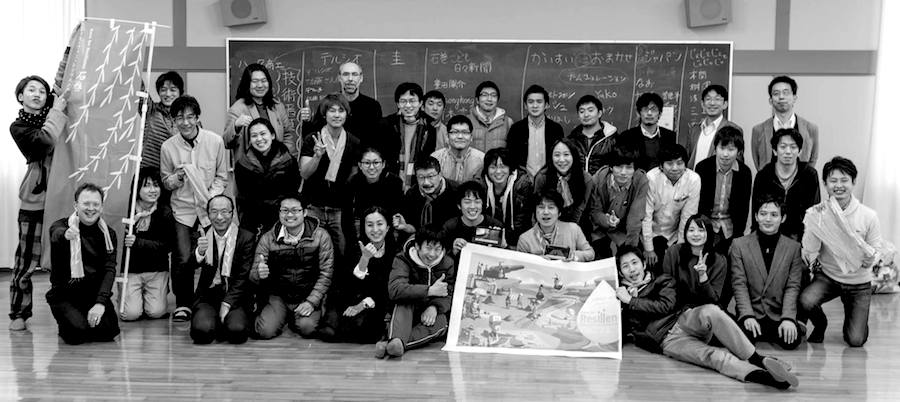
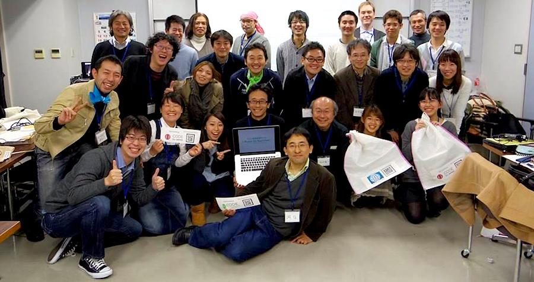

2014年2月、世界銀行 東京防災ハブの立ち上げを記念し、ICTを防災・減災に活用し、イノベーションを推進することを目的とし、グローバル防災・減災アイデアソン・ハッカソンを開催します。
「発展途上国×防災・減災」という日本で暮らす私たちになじみのうすいテーマに挑戦するこのハッカソン、プログラマーやエンジニアに加え、発展途上国で支援を行う専門家、学生など様々な職業、バックグラウンドをもつ参加者が「防災・減災」という同じゴールに向かって、それぞれの強みを生かし様々なやり方で自由に走っていくレースのような、楽しさと多様性を伴ったものとなるように"Race for Resilience"と名付けました。
初年度となる2014年は日本を筆頭に、アジア数カ国およびハイチ、ロンドン（他順次交渉中）において、同時開催となります。 2月に行われる各国でのハッカソンの後、各国の最優秀プロダクトはグローバル審査に進み、2014年7月にイギリスにてグローバルアワード表彰式が行われるほか、2015年3月の国連防災世界会議でも成果発表が行われます。
実際にNPOやNGO、世銀関連機関の発展途上国の防災・減災活動に取り入れられるようなソフトウェア、ハードウェアをつくりあげ、自然災害に対してしなやかな社会をつくることを目指します。
アイデアソンでは、社会問題をアプリや技術を使って解決しているメンターの取り組みの紹介や、発展途上国の防災に役立つことが期待できる日本の防災技術のキャッチアップの時間を経て、６つの国（フィリピン、インド、バングラディシュ、インドネシア、パキスタン、スリランカ）の災害、防災の課題について各国チームにわかれて話し合います。各国で実際に活動する防災の専門家や各国の出身留学生、各国に常駐する世界銀行スタッフ（ビデオチャット）もチームに加わります。ハッカソンに向けて、課題＆解決のためのアイディアだし、チームづくりを行います。
ハッカソンでは、2日間のうちに、発展途上国の防災・減災に役立つソフトウェア・ハードウェアをつくりあげます。2日目の午後から審査員により審査が行われ、各会場、最優秀賞、優秀賞、各賞が発表されます。各会場1チームがグローバル審査に進みます。
ハッカソン終了後、世界中の途上国支援団体の関係者が防災の課題とそれに対する解決ツールを見つけられるよう、本ハッカソンで生まれたすべてのアプリ、プロダクト、制作者のデータはグローバルサイトに掲載され、誰でも閲覧できるようにさせていただきます。
  
（順次掲載していきます）